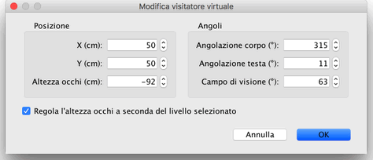
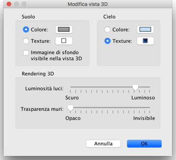

| Modificare la vista 3D | |||
Scegli Vista 3D > Vista aerea o Vista 3D > Visita virtuale per cambiare tra i due punti di vista proposti nella vista 3D.
Quando è selezionata Vista aerea, la vista 3D
mostra la tua casa in 3 dimensioni vista dall'alto. In questa
modalità, il movimento del mouse verso sinistra o verso destra con il
pulsante sinistro premuto fa girare la casa attorno a un asse
verticale posizionato nel centro della casa; il movimento del mouse
avanti o indietro con il pulsante sinistro premuto fa girare la
casa attorno a un asse orizzontale; la rotella del mouse
ingrandisce o rimpicciolisce la vista 3D.
Quando è selezionata la Visita virtuale, viene visualizzato un visitatore virtuale visto dall'alto viene disegnato contemporaneamente nel piano casa. La sua posizione e il suo angolo sono aggiornati simultaneamente nel piano e nella vista 3D a ogni spostamento del visitatore. Questo visitatore virtuale è circondato da quattro indicatori.
|


|
Quando il puntatore del mouse è su una delle spalle del visitatore o sulla sua
schiena, cambia per indicare che puoi trascinare e rilasciare quel punto per cambiare
l'angolo della testa del visitatore, il suo angolo del corpo o l'elevazione del suo
punto di vista. Mentre premi il pulsante del mouse, un suggerimento mostra il
valore modificato.  Questo pannello permette anche di cambiare il campo visivo del visitatore virtuale e di impostare se l'elevazione totale del punto di vista deve essere regolata in base al livello attualmente selezionato, facendo salire o scendere il visitatore virtuale al livello selezionato. Infine, la voce di menu Vista 3D > Modifica vista 3D... mostra il pannello della vista 3D che ti permette di cambiare il colore o la texture del terreno e del cielo, l'intensità della luce e la trasparenza delle pareti (e dei pavimenti).  |
|